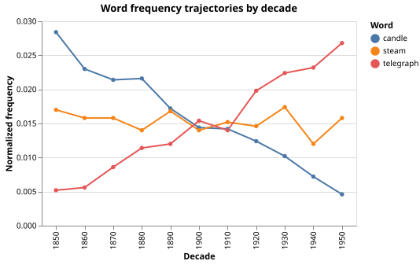

Word Frequency Change Over Time
The Problem
- A word's relative frequency in a corpus can rise or fall over decades as cultural and linguistic fashions change.
- Diachronic analysis asks: given a corpus of texts labelled by period, how can we detect and quantify these changes?
- The approach here:
- Generate a synthetic corpus in which each decade's token counts include three target words with known injected linear trends.
- Normalize raw counts by total tokens per decade to obtain normalized frequencies.
- Estimate a word-shift slope for each target word using ordinary least squares.
- Visualize frequency trajectories with Vega-Altair.
Why normalize raw word counts by the total tokens per decade rather than comparing raw counts directly?
- Because raw counts are always larger in recent decades due to digitization bias.
- Wrong: raw counts may be larger in any decade depending on corpus size; the direction of that bias is not fixed.
- Because a word can appear more often simply because more text was produced in
- that decade, not because the word became more popular.
- Correct: normalizing converts counts to relative frequencies so that an increase in a word's share of tokens is attributable to changed usage, not to a larger corpus.
- Because normalized frequencies are always integers and easier to work with.
- Wrong: normalized frequencies are proportions (values between 0 and 1), not integers.
- Because the normalization removes all sampling noise from the data.
- Wrong: normalization corrects for corpus size differences but cannot remove the statistical variation that results from sampling a finite corpus.
Normalized Frequency
- For word $w$ in decade $d$ with raw count $c_{w,d}$ and total token count $N_d = \sum_{w'} c_{w',d}$, the normalized frequency is:
$$f_{w,d} = \frac{c_{w,d}}{N_d}$$
- All normalized frequencies in a decade sum to 1, making them comparable across decades regardless of how many texts were digitized or produced.
Linear Trend
- A linear trend assumes that the normalized frequency changes by a constant amount per decade: $f_{w,d} = \alpha_w + \beta_w \cdot d_{\text{idx}}$, where $d_{\text{idx}}$ is the decade index (0 for the earliest decade, 1 for the next, and so on).
- The OLS slope estimator is:
$$\hat{\beta}_w = \frac{\displaystyle\sum_d (d_{\text{idx}} - \bar{d})(f_{w,d} - \bar{f}_w)} {\displaystyle\sum_d (d_{\text{idx}} - \bar{d})^2}$$
- A positive $\hat{\beta}_w$ means the word's share of tokens rose over time; a negative slope means it fell.
- The units of $\hat{\beta}_w$ are normalized-frequency change per 10-year period.
Generating Synthetic Data
- Decade indices run from 0 (1850) to 10 (1950)
- "telegraph" has base frequency 0.005 and rises by 0.002 per decade
- "candle" has base frequency 0.025 and falls by 0.002 per decade
- "steam" is stable at 0.015 throughout (zero slope, used as a control)
- 97 background words share the remaining probability mass equally
- Multinomial sampling with 5000 tokens per decade adds realistic noise
def make_corpus(
decades=DECADES,
tokens_per_decade=TOKENS_PER_DECADE,
bg_vocab_size=BACKGROUND_VOCAB_SIZE,
target_words=TARGET_WORDS,
target_base_freq=TARGET_BASE_FREQ,
target_slope=TARGET_SLOPE,
seed=SEED,
):
"""Return a Polars DataFrame with columns decade, word, count.
For each decade, target word frequencies follow the injected linear trend
(base_freq + slope * decade_index). The remaining probability mass is
shared equally among bg_vocab_size background words and sampled with a
multinomial draw, so each run with the same seed produces identical counts.
"""
rng = np.random.default_rng(seed)
records = []
for decade_index, decade in enumerate(decades):
# Target word frequencies for this decade.
target_freqs = [
base + slope * decade_index
for base, slope in zip(target_base_freq, target_slope)
]
remaining = 1.0 - sum(target_freqs)
bg_freq = remaining / bg_vocab_size
# Build probability vector: target words first, then background words.
bg_words = [f"word{i:03d}" for i in range(bg_vocab_size)]
all_words = target_words + bg_words
all_probs = target_freqs + [bg_freq] * bg_vocab_size
counts = rng.multinomial(tokens_per_decade, all_probs)
for word, count in zip(all_words, counts):
records.append({"decade": decade, "word": word, "count": int(count)})
return pl.DataFrame(records)
Computing Normalized Frequencies
def normalize(df):
"""Return df with a 'freq' column: each word's share of tokens that decade.
freq = count / sum(count) for the same decade.
The result is a probability distribution over words for each decade,
so values sum to 1.0 within each decade.
"""
totals = df.group_by("decade").agg(pl.col("count").sum().alias("total"))
return df.join(totals, on="decade").with_columns(
(pl.col("count") / pl.col("total")).alias("freq")
)
Estimating Trend Slopes
def linear_trend(decade_indices, freqs):
"""Return the OLS slope: change in normalized frequency per decade.
Uses the closed-form ordinary least-squares formula:
slope = sum((x - x_mean) * (y - y_mean)) / sum((x - x_mean)^2)
where x is the decade index (0, 1, ..., n-1) and y is the normalized
frequency. The result is in units of frequency change per 10-year period.
"""
x = np.asarray(decade_indices, dtype=float)
y = np.asarray(freqs, dtype=float)
x_c = x - x.mean()
denom = np.dot(x_c, x_c)
if denom == 0.0:
return 0.0
return float(np.dot(x_c, y) / denom)
def compute_trends(freq_df, words):
"""Return a dict mapping each word to its OLS slope (per decade).
freq_df must have columns decade, word, freq, sorted by decade.
Decade index 0 corresponds to the earliest decade in the data.
"""
min_decade = freq_df["decade"].min()
trends = {}
for word in words:
subset = freq_df.filter(pl.col("word") == word).sort("decade")
decade_indices = [(d - min_decade) // 10 for d in subset["decade"].to_list()]
freqs = subset["freq"].to_list()
trends[word] = linear_trend(decade_indices, freqs)
return trends
Visualizing Frequency Trajectories
def plot_trajectories(freq_df, words, filename):
"""Save an Altair line chart of normalized frequency over time for each word.
Each word appears as a separate line; the x-axis is the decade and the
y-axis is the normalized frequency (proportion of all tokens that decade).
"""
chart_df = freq_df.filter(pl.col("word").is_in(words)).sort(["word", "decade"])
chart = (
alt.Chart(chart_df)
.mark_line(point=True)
.encode(
x=alt.X("decade:O", title="Decade"),
y=alt.Y("freq:Q", title="Normalized frequency"),
color=alt.Color("word:N", title="Word"),
)
.properties(
width=400,
height=260,
title="Word frequency trajectories by decade",
)
)
chart.save(filename)

Testing
- Normalization sums to one
- After normalization, the sum of all word frequencies within each decade must equal 1.0 to floating-point precision.
- Non-negative frequencies
- All normalized frequencies must be non-negative; a negative value would indicate a bug in the join or division step.
- Flat series has zero slope
- A sequence of identical frequencies gives OLS slope exactly 0.0.
- Known-slope recovery
- A perfectly linear sequence with slope 0.002 must return slope 0.002 to machine precision (no sampling noise, so no tolerance needed).
- Single-point series
- A single-point input has a zero denominator; the function must return 0.0 rather than raising an exception.
- Slope signs
- The slope for "telegraph" must be positive, for "candle" negative, and for "steam" near zero (within 0.001).
- Slope magnitude
- The recovered slope for each target word must be within 0.001 of the true injected value. The expected standard error of the OLS estimator for this corpus is below 0.0002, so 0.001 allows more than five standard errors of sampling variation before a test failure.
import pytest
import polars as pl
from generate_wordshift import make_corpus, TARGET_WORDS, TARGET_SLOPE
from wordshift import normalize, linear_trend, compute_trends
def test_normalize_sums_to_one():
# After normalization, frequencies within each decade must sum to 1.0.
df = make_corpus()
freq_df = normalize(df)
decade_totals = freq_df.group_by("decade").agg(
pl.col("freq").sum().alias("total_freq")
)
for total in decade_totals["total_freq"].to_list():
assert total == pytest.approx(1.0, abs=1e-9)
def test_normalize_non_negative():
# All normalized frequencies must be non-negative.
df = make_corpus()
freq_df = normalize(df)
assert freq_df["freq"].min() >= 0.0
def test_linear_trend_flat():
# A constant frequency sequence has slope exactly 0.
indices = list(range(11))
freqs = [0.015] * 11
assert linear_trend(indices, freqs) == pytest.approx(0.0)
def test_linear_trend_known_slope():
# A perfectly linear sequence has the exact injected slope.
# slope = 0.002, starting at 0.005, over 11 decades.
indices = list(range(11))
freqs = [0.005 + 0.002 * i for i in indices]
assert linear_trend(indices, freqs) == pytest.approx(0.002, abs=1e-12)
def test_linear_trend_single_point():
# A single-point series has an undefined denominator; the function
# must return 0.0 without raising an exception.
assert linear_trend([0], [0.5]) == pytest.approx(0.0)
def test_slope_signs_correct():
# telegraph must have a positive slope, candle a negative slope,
# and steam a slope near zero. Tolerance of 0.001 is 5x the
# expected standard error given 5000 tokens per decade and 11 decades.
df = make_corpus()
freq_df = normalize(df)
trends = compute_trends(freq_df, TARGET_WORDS)
assert trends["telegraph"] > 0.0
assert trends["candle"] < 0.0
assert trends["steam"] == pytest.approx(0.0, abs=0.001)
def test_slope_magnitude():
# The recovered slopes should be within 0.001 of the true injected values.
# Standard error of the OLS slope is < 0.0002 for these parameters,
# so 0.001 allows for more than 5 standard errors of sampling variation.
df = make_corpus()
freq_df = normalize(df)
trends = compute_trends(freq_df, TARGET_WORDS)
true_slopes = dict(zip(TARGET_WORDS, TARGET_SLOPE))
for word in TARGET_WORDS:
assert trends[word] == pytest.approx(true_slopes[word], abs=0.001), (
f"{word}: expected slope {true_slopes[word]}, got {trends[word]:.5f}"
)
Word frequency change key terms
- Diachronic analysis
- The study of how linguistic features (word frequencies, grammatical constructions) change across time periods; contrasted with synchronic analysis, which examines a single point in time
- Normalized frequency
- A word's count divided by the total token count for the same period; expresses the word's share of the corpus rather than its raw occurrence count, making comparisons across periods of different sizes fair
- Word shift
- A change in the relative frequency of a word over time; a positive shift indicates rising usage, a negative shift indicates declining usage
- OLS slope
- In this context, $\hat{\beta}_w = \sum_d (d-\bar{d})(f-\bar{f}) / \sum_d (d-\bar{d})^2$; the rate of change of normalized frequency per decade estimated by ordinary least squares
Exercises
Do the math
-
A word appears 50 times in a decade that contains 2000 total tokens. What is its normalized frequency?
-
A word has normalized frequency 0.010 at decade index 0 and 0.020 at decade index 1 (two data points only). The mean decade index is 0.5 and the mean frequency is 0.015. What is the OLS slope?
Confidence interval on the slope
Extend linear_trend to return both the slope and its standard error
$\text{SE}(\hat{\beta}) = \hat{\sigma} / \sqrt{\sum_d (d - \bar{d})^2}$,
where $\hat{\sigma}^2 = \sum_d (f_{w,d} - \hat{f}_{w,d})^2 / (n - 2)$ is the
residual variance.
Report a 95% confidence interval for each target word and check whether the
interval for "steam" contains zero.
Detecting non-linear change
The linear model assumes a constant rate of change. Add a word "flash" to the generator whose frequency rises steeply from 1850 to 1900 and then falls back to its starting level from 1900 to 1950 (an inverted V shape). Compute its OLS slope and explain why the slope is near zero even though the word's usage clearly changed. What alternative measure would capture the inverted-V pattern?
Rank shift
Instead of absolute frequency, use the rank of each target word within each decade (rank 1 = most frequent). Compute the rank-change slope and compare it to the frequency-change slope. In which cases do they agree and in which do they diverge?
Real corpus application
Download word-frequency data for two contrasting words from a public corpus such as
Google Ngrams.
Normalize by total token count per year, aggregate to decades, and apply linear_trend.
Does the recovered slope match the visual trend in the trajectory plot?